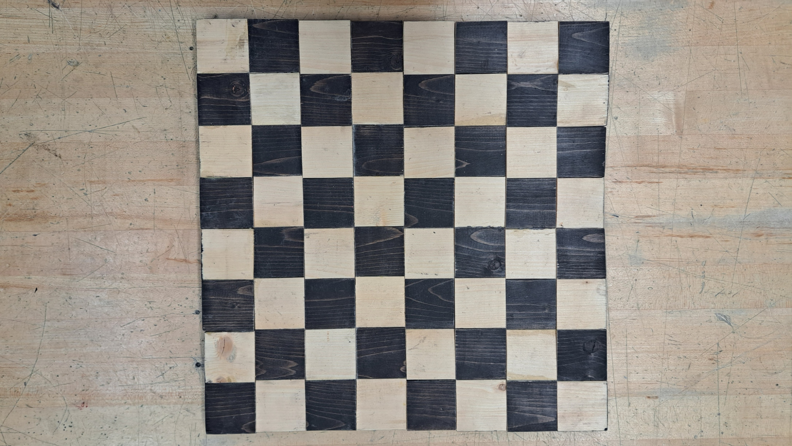

Required Materials
- Wood
- Wood stain
- Vinyl
Steps
1. Aquire Wood
Get yourself some wood. Any size, any width. As long as it is big enough to fit the width of your entire board.
2. Cut 8 Strips (2")
Cut the wood into eight equal strips using a band saw. Can be any size you want. This example has each strip cut at two inches. Sand the edges and faces, using a belt sander, of the strips to ensure they are smooth and safe to touch.
3. Stain 4 Strips
Stain the four strips and keep the other light. These will be your darker squares.
4. Glue Strips
Glue all strips together. Make sure they are alternating.
5. Cut 8 Opposite Strips
Evenly divide the board horizonally so that the lines to be cut are against the direction of the previous strips. Then use the band saw to cut the lines. Use the belt sander to smoothen the edges of the newly cut strips.
6. Glue Strips
Glue the newly cut strips together and ensure they are alternating and complete the checkerboard style. You may stain the edges of the board to add more style.

7. Cut Small Wooden Pieces (32)
Use the wood again to cut small wooden pieces. Chess having many pieces, you will need to make thirty-two of them.
8. Stain 16 Pieces
Stain half of the pieces and keep the rest light. Sixteen pieces will play as black.
9. Cut Vinyl
Cut vinyl to add the piece's symbols on top of the thirty-two pieces. You will need one white vinyl cut and one black vinyl cut. Each having 1 King, 1 Queen, 2 Rooks, 2 Bishops, and 2 Knights.
10. Peel and Attach Vinyl
Peel and attach the vinyls. The white vinyls will go on the black pieces and vice versa.
11. Play
Admire your work and start playing with others.
Challenges
One of the multiple challenges I faced were trying to differentiate the pieces by carving minimalistic pieces. None of the tools available in the lab were suitable to create the pieces effectively. In order to combat this challenge, vinyl cut to individual pieces symbols were used.
Final Notes
Some things I would improve in a future version of this product would be flattening the board using weight on top of the board during the gluing process. Nevertheless, I think this project was completed very well and a lot of people seem to enjoy the game when they were testing the product.